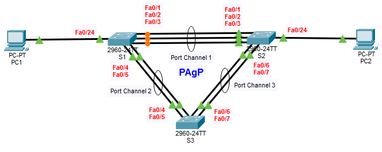

- Configure Basic Switch Settings
- Configure an Ether-Channel with Cisco PAgP
- Verify Ether-channel Configuration

| Device | Interface | IP Address | Subnet Mask |
|---|---|---|---|
| S1 | VLAN 1 | 172.16.1.1 | 255.255.255.0 |
| S2 | VLAN 1 | 172.16.1.2 | 255.255.255.0 |
| S3 | VLAN 1 | 172.16.1.3 | 255.255.255.0 |
| PC1 | VLAN 1 | 172.16.1.4 | 255.255.255.0 |
| PC2 | VLAN 1 | 172.16.1.5 | 255.255.255.0 |
| CONNECTION | INTERFACE USED | SWITCH MODE | PORT-CHANNEL NO. | PAGP RESULT |
|---|---|---|---|---|
| S1 - S2 | Fa0/1, Fa0/2, Fa0/3 | S1: Desirable S2: Desirable |
1 | Both sides actively negotiate |
| S1 - S3 | Fa0/4, Fa0/5 | S1: Auto S3: Desirable |
2 | Desirable initiates negotiation |
| S2 - S3 | Fa0/6, Fa0/7 | S2: Desirable S3: Auto |
3 | Desirable initiates negotiation |
Switch>enable Switch#conf t Switch(config)#no ip domain-lookup Switch(config)#hostname S1 S1(config)#interface vlan 1 S1(config-if)#ip address 172.16.1.1 255.255.255.0 S1(config-if)#description Management VLAN S1(config-if)#no shutdown S1(config-if)#interface range fa0/1-3 S1(config-if-range)#channel-group 1 mode desirable S1(config-if-range)#interface range fa0/4-5 S1(config-if-range)#channel-group 2 mode auto S1(config-if-range)#end S1#copy run start
Switch>enable Switch#conf t Switch(config)#no ip domain-lookup Switch(config)#hostname S2 S2(config)#interface vlan 1 S2(config-if)#description Management VLAN 1 S2(config-if)#ip address 172.16.1.2 255.255.255.0 S2(config-if)#no shutdown S2(config-if)#interface range fa0/1-3 S2(config-if-range)#channel-group 1 mode desirable S2(config-if-range)#interface range fa0/6-7 S2(config-if-range)#channel-group 3 mode desirable S2(config-if-range)#end S2#copy run start
Switch>enable Switch#conf t Switch(config)#no ip domain-lookup Switch(config)#hostname S3 S3(config)#interface vlan 1 S3(config-if)#description Management VLAN 1 S3(config-if)#ip address 172.16.1.3 255.255.255.0 S3(config-if)#no shutdown S3(config-if)#interface range fa0/4-5 S3(config-if-range)#channel-group 2 mode desirable 3(config-if-range)#interface range fa0/6-7 S3(config-if-range)#channel-group 3 mode auto S3(config-if-range)#end S3#copy run start
IPv4 Address: 172.16.1.4 Subnet Mask: 255.255.255.0
IPv4 Address: 172.16.1.5 Subnet Mask: 255.255.255.0
S1# show etherchannel summary S2# show etherchannel summary S3# show etherchannel summary S1#Show ip interface brief S2#Show ip interface brief S3#Show ip interface brief